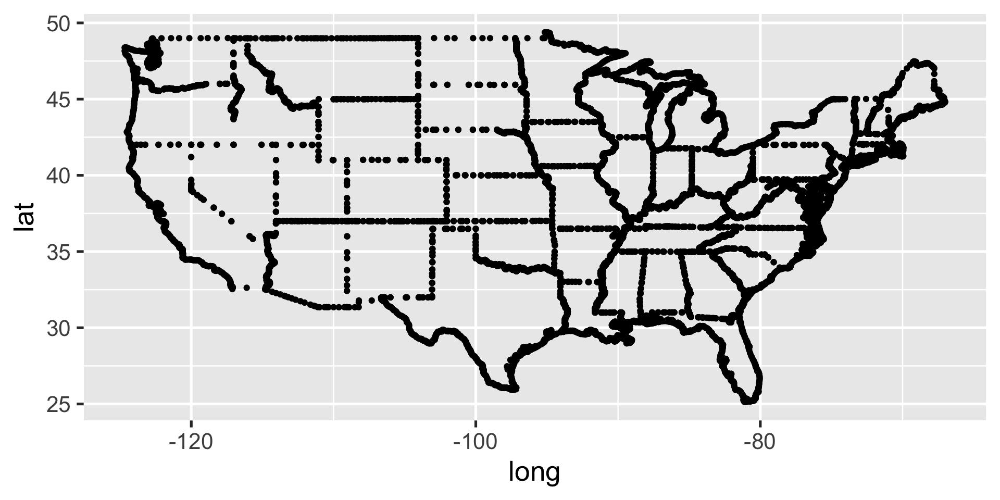
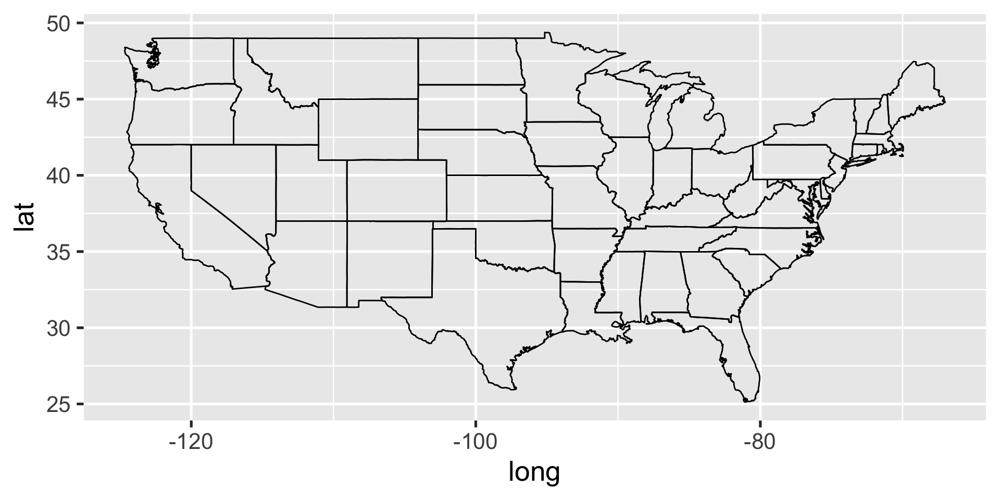
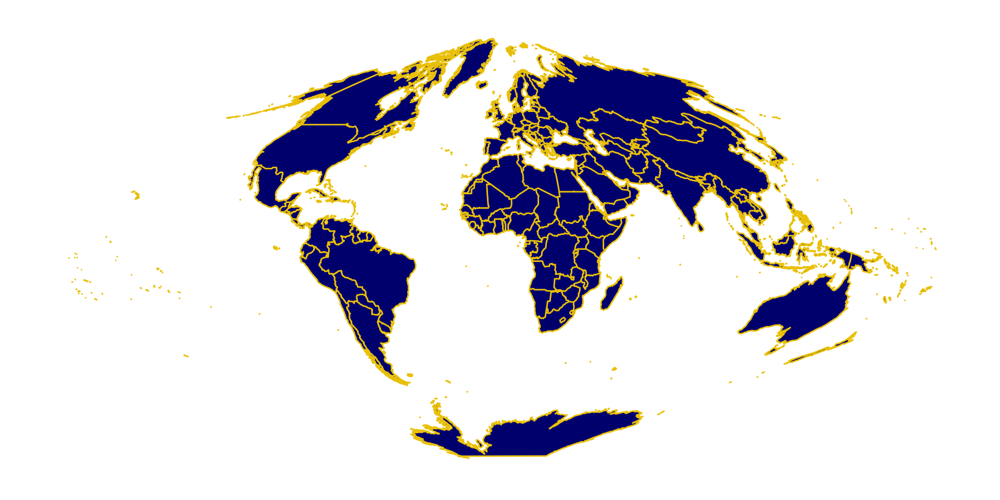

| date | last_name | first_name | address | age | cause_of_death |
|---|---|---|---|---|---|
| Aug 31, 1854 | Jones | Thomas | 26 Broad St. | 37 | cholera |
| Aug 31, 1854 | Jones | Mary | 26 Broad St. | 11 | cholera |
| Sept 1, 1854 | Warwick | Martin | 14 Broad St. | 23 | cholera |
Intro to Maps
and Spatial
Data
Day 05
Prof Amanda Luby
Carleton College
Stat 220 - Winter 2025
Today
- git/GitHub
- Intro to Spatial Data
- Making Maps in
ggplot2
- Think of the state on GitHub as “worst case scenario”
- If you screw things up, copy your important files (eg.
hw.Rmd) to a safe place.- Usually your files are JUST FINE. But it is easy to goof up the Git infrastructure when you’re new at this. And it can be hard to get that straightened out on your own.
- Rename the existing local repo as a temporary measure, i.e. before you do something radical, like delete it.
- Clone the original repo from GitHub to RStudio (follow the directions to create a new project). You are back to a happy state.
- Copy all relevant files back over from your safe space. The ones whose updated state you need to commit.
- Knit, commit, push
- Carry on with your life.

Spatial Data
Cholera
In 1854, a Cholera outbreak killed 127 people in 3 days in a London neighborhood, resulting in a mass exodus of local residents. At the time, people thought that Cholera w as an airborne disease. John Snow was a physician who was critical of the airborne theory, and set out to investigate.
What might this data look like?
What makes “address” a useful variable is that it is linked to a specific location in the physical world. If we plot these addresses, we get something like the following:
While we can see patterns in the last plot, the underlying map of the London streets provides helpful context that makes it more intelligble:
{kind=link}
Snow’s insight was driven by another set of data—the locations of the street-side water pumps (it’s kind of hard to see, but they are labelled on the map). Nearly all of the cases were clustered around a single pump on the center of Broad Street.
John Snow’s map (and water pump) are now “famous” among epidemiologists and statisticians.
A successful data science episode:
- Combine three sources of data (Cholera deaths, water pump locations, and street map)
- While a model might have come to the same conclusion, simply plotting the data is much simpler (and more convincing to lots of people)
- The problem was resolved when the data-based evidence was combined with a plausible model that explained the physical phenomenon.
What is a map?
A bunch of latitude longitude points…

What is a map?
… that are connected with lines in a very specific order.

Necessary map data
latitude/longitude points for all map boundaries
which boundary group all lat/long points belong
the order to connect points within each group
State map data
ggplot2::map_data() provides the necessary information
Rows: 15,537
Columns: 6
$ long <dbl> -87.46201, -87.48493, -87.52503, -87.53076, -87.57087, -87.5…
$ lat <dbl> 30.38968, 30.37249, 30.37249, 30.33239, 30.32665, 30.32665, …
$ group <dbl> 1, 1, 1, 1, 1, 1, 1, 1, 1, 1, 1, 1, 1, 1, 1, 1, 1, 1, 1, 1, …
$ order <int> 1, 2, 3, 4, 5, 6, 7, 8, 9, 10, 11, 12, 13, 14, 15, 16, 17, 1…
$ region <chr> "alabama", "alabama", "alabama", "alabama", "alabama", "alab…
$ subregion <chr> NA, NA, NA, NA, NA, NA, NA, NA, NA, NA, NA, NA, NA, NA, NA, …Using geom_polygon()
Using geom_polygon() will treat states as solid shapes, making it easier to add color
Using coord_fixed()
Using coord_fixed() forces x and y units to be equal
Your turn
- Edit this code so that each shape is colored in with a different color.
- You only need the 3 variables used:
long,lat, andgroup 05-maps.Rmdfile available in theactivitiesrepo
03:00
Coordinate Systems and Projections
Geospatial data exists on the globe and is generally described with a latitude and longitude. Any projection from the globe to euclidean space (X-Y plane) is going to cause some distortion.
Changing the coordinate system
coord_map function provides a Mercator projection (mapproj package has more options)
Changing the coordinate system
coord_map function provides a Mercator projection (mapproj package has more options)
Mercator vs Sinusoidal projection (world map)

Common Types of Maps
- Chloropleth
- Proportional Symbol
- Cartograms/Geofacets
Chloropleth
Fill in regions with variable values
Need two data sources:
- map data with lat, long, region
- data with measurements for each region
you don’t need to join them!
Proportional Symbol
Overlay symbols on an existing map, where the size of the shape is proportional to the variable
Cartogram
Use approximate geographical position to encode information, but not lat/long directly

Your task
Your task is to use the American Community Survey data to make a chloropleth map of the US
You should:
- Use the starter code provided in
05-maps.rmd - Choose a different variable
- Change the color scale
- Update the title, axis labels, and legend